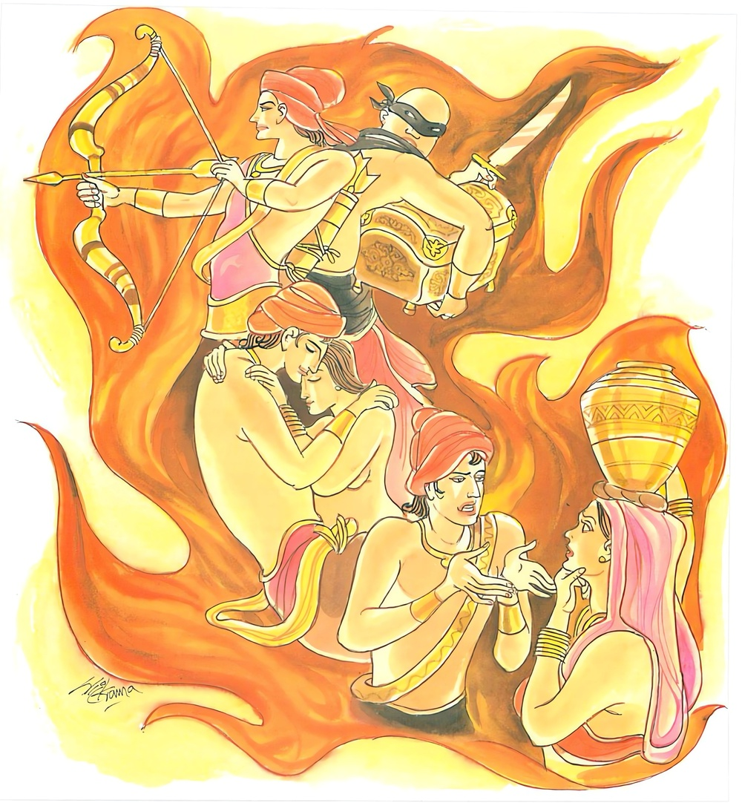
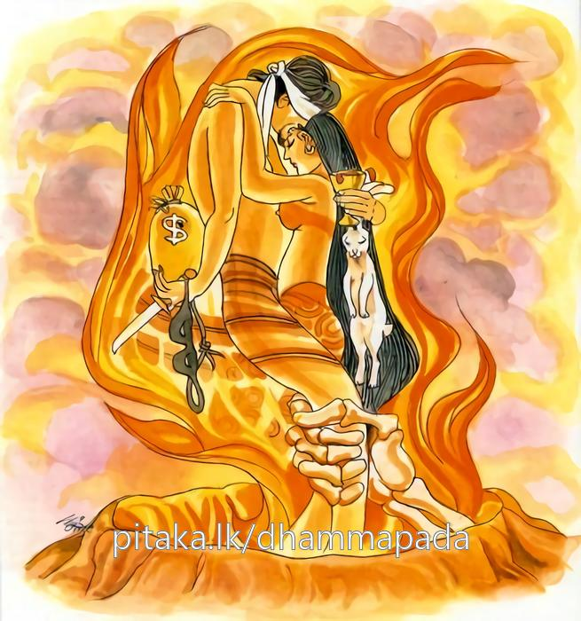

18-7 පන්සියයක් උපාසකයෝ
මෙම කතාව ධම්මපද අටුවාවෙන් ද කියවන්න.
යො පාණමතිපාතෙති මුසාවාදං ච භාසති
ලොකෙ අදින්නං ආදියති පරදාරං ච ගච්ඡති.
යමෙක් පණ නසා ද, බොරු කියා ද. (මේ) සත්ලොවෙහි නොදුන් දෑ පැහැරැ ගනී ද, පරඹුවන් කරා යේ ද,

සුරාමෙරයපානං ච යො නරො අනුයුඤ්ජති
ඉධෙව පොසො ලොකස්මිං මූලං ඛණති අත්තනො.
යම් මිනිසෙක් රහමෙර පීමෙහිත් යෙදේ ද, මෙබඳු පුඟුල් තෙම මෙ ලොව්හි දී ම තමාගේ ප්රතිෂ්ඨාමූලය කණන්නේ ය.
එවං භො පුරිස ජානාහි පාපධම්මා අසඤ්ඤතා
මා තං ලොභො අධම්මො ච චිරං දුක්ඛාය රන්ධයුං.
භවත් පුරුෂය, (අකුශල) ධර්මයෝ සංයම නැත්තෝ යැ යි මෙසේ දනුව. ලෝභය ද ද්වේෂය ද යන අකුශලමූලයෝ දෙදෙන තා බොහෝ කලක් නරකාදි දුකට නො පමුණුවත්වා.

සැවැත් නුවර වැසි පන් සියයක් උපාසකයෝ එක් දවසක් බුදුරජුන් වෙත ගොස් වැද එකත් පස් ව සිටියාහ. උන්ගනේ කෙනෙක් පණිවායෙන්, කෙනෙක් අයිනාදනින්, කෙනෙක් පරඹුවන් සෙවුමෙන්, කෙනෙක් මුසවායෙන්, කෙනෙක් රහමෙරින් වැළකී සිටියහ. මෙසේ එක් එක් සිකපද රැක්කා වූ ඒ උපාසකයෝ “මා රක්නා සිකපදය රැකීම පහසු නො වේ, මම රකින්නට අපහසු නො රැකිය හැකි සිකපදය රකිමි”යි මෙසේ විවාද කරන්නෝ එබව බුදුරජානන් වහන්සේට දන්වාලූහ. උන්වහන්සේ ඔවුන්ගේ විවාදය අසා එක් සිකපදයකුත් රැකීම පහත නො කොට ඒ හැම එකක් රැකීම පහසු නො වේ ය”යි වදාරා මේ ධර්මදේශනාව කළ සේක.
යො පාණමතිපාතෙති මුසාවදඤ්ච භාසති,
ලොකෙ අදින්නං ආදියති පරදාරඤ්ච ගච්ඡති.
.
සුරාමෙරයපානඤ්ච යො නරො අනුයුඤ්ජති,
ඉධෙව පොසො ලොකස්මිං මූලං ඛන්ති අත්තනො.
.
එවං හො පුරිස! ජානාහි පාපධම්මා අසඤ්ඤතා,
මා තං ලොහො අධම්මො ච චිරං දුක්ඛාය රන්ධයුන්ති.
යමෙක් පණ නසා ද, බොරුත් කියා ද, ලෙව්හි නො දුන් දැය ගණි ද, පරඹුවන් කරා යේ ද.
යම් මිනිසෙක් රහමෙර පීමෙහිත් යෙදේ ද, මෙතෙමේ මෙලොව දී ම තමාගේ මූලය කණින්නේ ය.
භවත් පුරුෂ! අකුශලධර්මයෝ සංයම නැත්තාහ යි මෙසේ දැන ගණුව. ලොභය ද ද්වේෂය ද යන අකුශල මූලයෝ දෙදෙන තා බොහෝ කලක් නරකාදි දුකට නො පමුණු වත්වා.
යෝ පාණං අතිපාතෙති = යමෙක් පණ නසා ද.
යමෙක් සවැදෑරුම් වූ සාහත්ථිකාදි ප්රයෝගයන් අතුරෙහි යම් ප්රයෝගයකින් පරපණ නසා ද, පරපණ සිඳ හරී ද, හෙතෙමේ ද, (මතුසම්බන්ධය) මෙහි පණැයි කියේ ජීවිතෙන්ද්රිය ය. [1]
මුසාවාදා ව භාසති = බොරුත් කියා ද.
ලොකෙ අදින්නං ආදියති = ලෙව්හි නො දුන් දැය ගණී ද.
සුරාමෙරයපානං ච යො නරො අනුයුඤ්ජති = යම් මිනිසෙක් රහමෙර බිමෙහිත් යෙදේ ද. [2]
‘සුරාමෙරයපානං’ යන්නට ‘රහමෙරබීමෙහි’යි සත්වන විබතින් අරුත් දෙනුයේ මෙහි පෙණෙන ‘අනුයුඤ්ජති’ යන ක්රියා පදයෙහි යෙදීසිටි ‘අනු’ යනු බලා ය.
ඉධ එව සො ලෙකස්මිං = මෙතෙම් මෙලොවදී ම.
මූලං ඛන්ති අත්තනො = තමාගේ මූලය කණින්නේ ය. [3]
පරලොව විඳිනා දුක් තිබේවා. ඔහු මෙ කියූ පව්කම් කරණුයේ මෙලාවදීම කෙත්වත් ගේදොර හරකබාන රන්රුවන් ඈ මෙලොව දිවිවැටුමට උපකාරව සිටි පිහිට විසින් පැවැති හැම දැයක් නැසී ගොස් අනාථ ව අසරණ ව මග බැස යන්නේ ය. හිඟන්නෙක් වන්නේ ය. එය නො වැළකිය හැකි ය. තමන් උපයගන්නා වූ ද මවුපියන් සතුව තිබුනා වූ ද එහැම, වෙණදම් ගොවිකම් ඈ සුදුසු කටයුතුවලට යෙනා යොදා උකස් තබා වෙසඟනන්ට දී, රහමෙරබීම් මස්කෑම් ආදියට වියදම් කොට හොරකම් ඈ නපුරුකම් කොට පසු ව එයට දඩ ගෙවා ගෙවා ලන්නේ ය. තමාට මෙලොව දිවි වැටුම පිණිස වූ සියලු දැය නැසී යෑමෙන් මොහුගේ මුල සිඳී යන්නේ ය. [4]
එවං හො පුරිස! ජානාහි = භවත් පුරුෂ! මෙසේ දනුව.
භො යනු ආමන්ත්රණාර්ත්ථයෙහි නිපාතයෙකි. එය මෙහි පුරිස යන්නට එක් වන්නේ ය. පස්වැදෑරුම් දුසිල්කම් කරන්නහු අමතන්නේ ය. “එම්බා දුසිල්කම් කරණ පුරුෂ!” යනු අරුත්.
පාපධම්මා අසඤ්ඤතා = අකුශලධර්මයෝ සංයම නැත්තාහ.
මෙහි කියූ පාපධර්මනම්: ප්රධාන විසින් පස් පව් ය. ඒ කරන්නහුට කායසංවරයක් නැත. වාක්සංවරයක් නැත. මනස්සංවරයක් නැතැ යි දත යුතු ය යනු වදාළ සේක.
මා තං ලොහො අධම්මො ච චිරං දුක්ඛාය රන්ධයුං = ලොභය ද ද්වේෂය ද යන අකුශලමූලයෝ තා බොහෝ කලක් නරකාදි දුකට නො පමුණු වත්වා.
සමහර විටෙක අකුසල්, ලොභ-ද්වේෂ මුල් කොට හෝ සමහර විටෙක ද්වේෂ-මෝහ මුල් කොට හෝ සමහර විටෙක ලොභ-මෝහ මුල්කොට හෝ සමහර විටෙක ලොභ-දිවේෂ-මෝහ, මුල් කොට හෝ සමහරවිටෙක මෝහය මුල් කොට සිදු වන්නේ ය. මේ කොයි ලෙසකින් හෝ කිලිටු වූ සිත් ඇති මිනිසා පව්කම් කොට මෙලොව අසරණ වනු පමණක් නො ව පරලොව ද බොහෝ කාලයක් දුකෙහි වැටෙන්නේ ය. එහෙයින් කෙලෙස් සහ ගිය සිතින් පව්කම් කොට දුකට නො පැමිණේවා යි මෙයින් වදාළ සේක. ලොභ-ද්වේෂ වදාළ තැනි මෝහය ද ගැණෙන බැවින් මෙහි මෝහයාගේ ගැණීම ද විය යුතු ය.
ධර්මදේශනාවගේ අවසානයෙහි ඒ පන් සියයක් උපාසකයෝ සෝවන් ඵලයෙහි පිහිටා ගත්හ. ධර්මදේශනාතොමෝ පැමිණ සිටි පිරිසට ද වැඩසහිත වූ ය.
පඤ්චශත උපාසක වස්තුව නිමි.